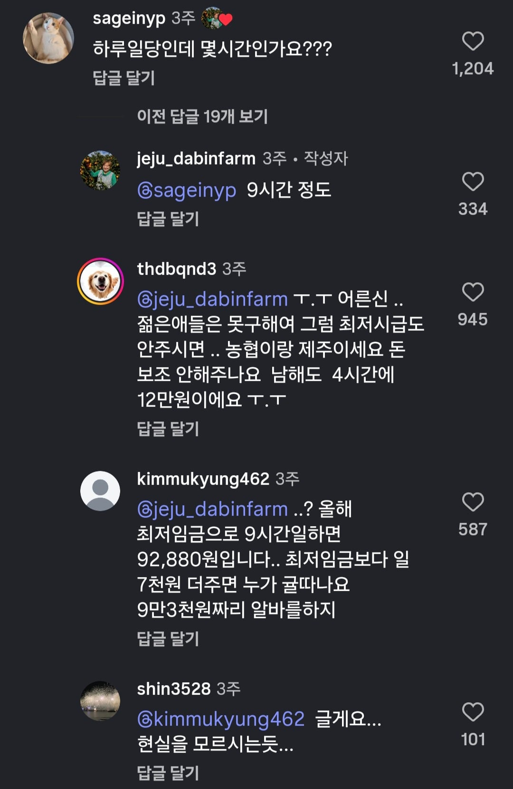

일당 10만원인데 사람 구하기 힘들다는 곳
댓글
세상변한걸 모르셔
귤 몇박스 챙겨주면 인정
돈으로 안 되는 건 돈이 부족해서다
글과는 별개로, 님들 점심시간 1시간안에 밥을 먹고 양치까지 봐야하는가? 아니면 양치같은건 점심식사 이후 시간에 해야한다? 어떻게 생각함?
당연히 밥시간에 해야지 업무시간에 이를 왜 닦고 있어 요즘애들 왜이렇게 개념이없냐 진짜 ㅋ
그치 흠
우리나라 사업주 약70% 인식 수준 : 무슨일을 하든 최저임금만 주면 된다. 난 떳떳한데 뭐가 문제지?
저거 댓글 가봤는데 최저임금이 얼마인지조차 모름 ㅋㅋㅋㅋ
저 10만원이란 가격은 주변 농장들이랑 담합한거라고 함
그런데 제주도 귤농장 중국인들이 주인인곳 졸 많지 않나? 중국 기준으로 책정을 했나 ㅋㅋㅋㅋㅋㅋㅋ
울 작은삼촌 감, 사과농사 하는데
사과 따는거 시급 1.25주고 당근에서 10명 모집해서 하루에 싹 끝냄.
모집 올리자마자 거의 마감 수준으로 몰려듬.
끝나고 수육에 굴김치해서 식사하고 집에보냄
저 아줌마가 2천원만 더 썼어도 저런 반응은 아니였음
최저임금이 말그대로 '최저로 보장되는 임금' 이어야되는데
'최저'만 맞춰주면 해결된다 로 되어서 ...
여기 시골인데 고추 따는데 13~14만원 준다
고모할머니네 고구마캘때 일당16하니까 겁나많이오던데
욕먹을일이냐고 글하나더올린것까지 완벽하네
오타나서 0 하나 빠졌거나
4친다는게 1로 친 줄 알았다.
최저임금을 올려 놔서 그나마 저렇게라도 주는 듯..
저 돈 받고 일할 사람은 외국인 밖에 없을건데
외국인도안해
세상물정 모르네
언제적 10만원이야 대체..